When Hope Becomes Harm: Inside a Fraudulent Tinnitus Trial
In late 2024, an unregulated experiment began circulating through online tinnitus communities. The participants suffered from debilitating hearing disorders such as tinnitus (phantom sounds like ringing), hyperacusis (normal sounds perceived as unbearably loud), and noxacusis (physical pain from sound). Many were isolated and homebound, with few treatment options and little hope of relief. An anonymous figure known as "Anthony" invited them to try an experimental device called the "Guinea Guy Device", or GGD. He presented it as scientifically grounded, modeled after published research by University of Michigan audiologist Dr. Susan Shore. This association with Shore's research lent the GGD scientific credibility, even though it had never been clinically tested.
Dr. Shore and her team at the University of Michigan developed a neuromodulation device to treat somatic tinnitus, a form of tinnitus that changes with jaw, neck, or facial movement. The device, which became known as the Susan Shore Device or SSD, uses precisely timed pairs of sound and mild electrical pulses to retrain the neural pathways involved in generating tinnitus. Clinical trials found meaningful reductions in symptoms for many participants, and the technology has since been licensed to a company called Auricle which is preparing it for Food and Drug Administration (FDA) review and commercial release. The SSD consists of a single earbud for audio delivery, small adhesive electrodes placed on the cheek or neck, and a handheld control unit that synchronizes sound with electrical stimulation.
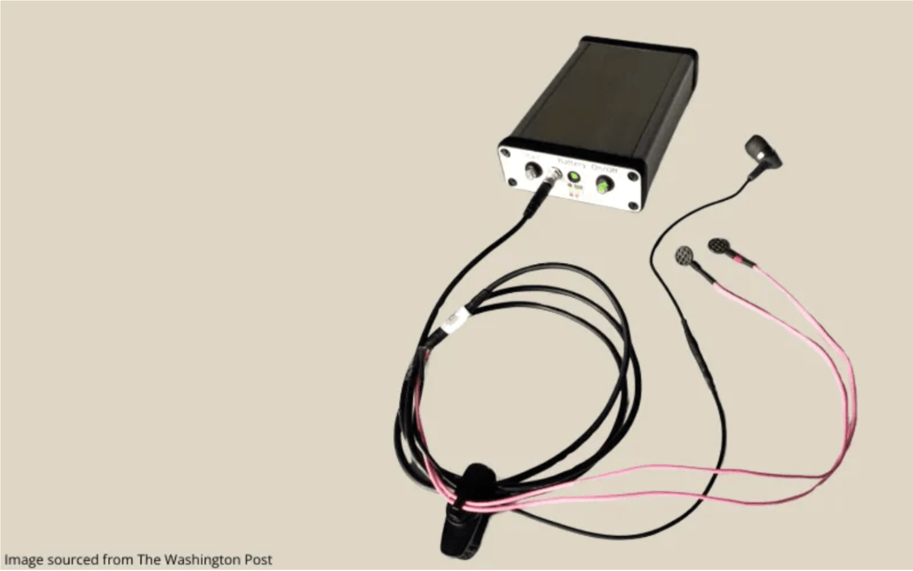
While Shore's device moved through the FDA approval process, a do it yourself (DIY) movement began to take shape across online tinnitus spaces. With no FDA-approved treatments available and most medical options limited to sound masking or coping strategies, many sufferers felt they couldn't afford to wait years for regulatory approval.
Shore's research had been published in peer-reviewed journals, detailing the parameters her device used such as the timing between sound and electrical stimulation, the frequencies, and the electrode placement. Two community members began working together to reverse-engineer these specifications, and one eventually created detailed electrical schematics and step-by-step tutorials, making it possible for people without engineering backgrounds to build their own versions. These efforts coalesced into a dedicated DIY SSD Discord server, where members could share schematics, troubleshoot problems, and compare results. The information was shared freely, with the understanding that this was a collaborative, non-commercial effort. For a community that had been told for years that nothing could be done about their condition, building a DIY SSD was a way to finally do something.
As the DIY project grew, Anthony became an active participant in the server and began assembling his own DIY SSD in hopes of treating his tinnitus. He worked from schematics that other members had already created, relying on community help to troubleshoot technical issues. At this point, he was simply another member learning to build the device, rather than contributing to the technical design itself.
Beyond the DIY server, Anthony had become a central figure in the broader online tinnitus community. He ran a Discord server called Tinnitus and Hyperacusis Sufferers Unite, which served as a support group for people with hearing conditions. He also ran a YouTube channel where he discussed tinnitus research. He frequently presented himself as knowledgeable about the underlying mechanisms of tinnitus and related conditions. As he began working on his DIY SSD, he rebranded both the server and YouTube channel as Tinnitus Labs, describing the change as a shift toward a more scientifically grounded approach. He framed the rebrand as part of a mission centered on "seeking truth and transparency in a field riddled with charlatans," "exposing deceptive practices," and bringing "clarity and integrity" to tinnitus research.
Anthony reinforced his authority by presenting himself as one of the few honest voices in a field he characterized as filled with scams and exploitation. He released videos criticizing other tinnitus treatments, calling out what he described as ineffective devices, fraudulent programs, and pseudoscientific approaches that preyed on desperate patients. He framed Susan Shore's research as the most legitimate path forward, and by extension cast himself as the gatekeeper to that solution. This framing created an us-against-the-world mentality within Tinnitus Labs. Members began to see themselves as part of an informed community that could see through deceptions others fell for.
Anthony's place in the community was also shaped by the fact that he had lived through the same extreme symptoms as many of the people who followed him. He often spoke about his own history of severe tinnitus and hyperacusis. He described becoming largely housebound after a noise injury in 2021 and said he eventually improved after spending months in a very quiet environment. His account was one of the most dramatic recovery stories circulating in the tinnitus and hyperacusis space. Many saw his improvement as proof that recovery was possible, which increased the trust they placed in his perspective.
In August 2024, Anthony began posting videos describing what he characterized as rapid and dramatic improvement in his tinnitus after building and using his own DIY SSD. He said that after two sessions, the multiple tones he had lived with for years had begun to "morph" together into a single hiss. He reported that his tinnitus, which had previously cut through most everyday noise, could now be masked by a running sink. He also claimed that the tinnitus in his left ear had completely disappeared, describing the experience as deeply emotional. In these same videos, he also said the device had significantly improved his hyperacusis, describing a marked increase in his tolerance to everyday sounds. He referred to himself as a "super responder" and presented his progress as unusually strong.
With that attention building, Anthony expanded his YouTube coverage beyond his own progress to include reports from other DIY users. In a series of videos, he relayed striking results from several anonymous members of the DIY server. He said that one user had reached complete silence from tinnitus, describing it as "absolutely gone, 100%," and that another had achieved full suppression of hyperacusis. He delivered these updates with visible excitement, emphasizing how unprecedented these outcomes were. Taken together, the videos created the impression of a growing pool of successful outcomes.
As he began sharing updates from other DIY participants, Anthony also broadened the scope of what the DIY SSD could treat. Though Shore's research focused on somatic tinnitus, he reported improvements in related conditions, including hyperacusis, reactive tinnitus, and dysacusis (where sounds are perceived as distorted, unclear, or uncomfortable). He went further, arguing that the device could theoretically treat noxacusis as well. In one video, he presented Guinea Boy's dysacusis improvements as proof that "the Susan Shore device will cause a ripple effect of decreased hyperactivity throughout the auditory pathway," and used this theory to argue that noxacusis could also potentially be treated. This expanded framing made the project appealing to a much wider group of sufferers and introduced experimental claims that had never been validated.
One case quickly became central to Anthony's promotional narrative. He referred to the DIY user as "Guinea Boy" and presented the case as proof of concept for the DIY SSD. In multiple videos, Anthony said that Guinea Boy had achieved full suppression of both his tinnitus and dysacusis. Guinea Boy had seen no clear reduction during weeks of using the device until he began physical therapy for his jaw. Anthony attributed these improvements to the DIY SSD working once Guinea Boy addressed his jaw tension through physical therapy. This framing established a new narrative: when the device appeared ineffective, the problem lay not with the treatment itself but with unresolved physical issues in the participant.
Later, another DIY server member posted a detailed update after speaking directly with Guinea Boy. The reality was far different. Guinea Boy had been "having a very bad time 98% of the time" and his tinnitus had returned. The physical therapy had produced only temporary effects. More significantly, the device had not been properly calibrated to match his tinnitus frequency when these improvements occurred. The hardware issue was only corrected afterward. Guinea Boy himself suggested the temporary reductions might be placebo effects.
When pressed about these misrepresentations, Anthony promised to make follow-up videos updating his audience on the cases he had featured. He saw the detailed update about Guinea Boy's actual condition but never addressed it publicly. Guinea Boy's story continued to appear in Anthony’s promotional content as he discussed the DIY SSD with his growing audience.
In September 2024, Anthony began implementing stricter rules inside the DIY server. He told members not to mention the server or the DIY SSD project anywhere else, warning that anyone who did would be blacklisted from the community. He justified these restrictions by saying they were necessary to prevent outsiders from commercializing Susan Shore's work and to avoid potential legal problems with Auricle. He also introduced an application process that limited access to people he considered trustworthy. These rules created a more controlled and secretive atmosphere in a space that had originally been open and collaborative.
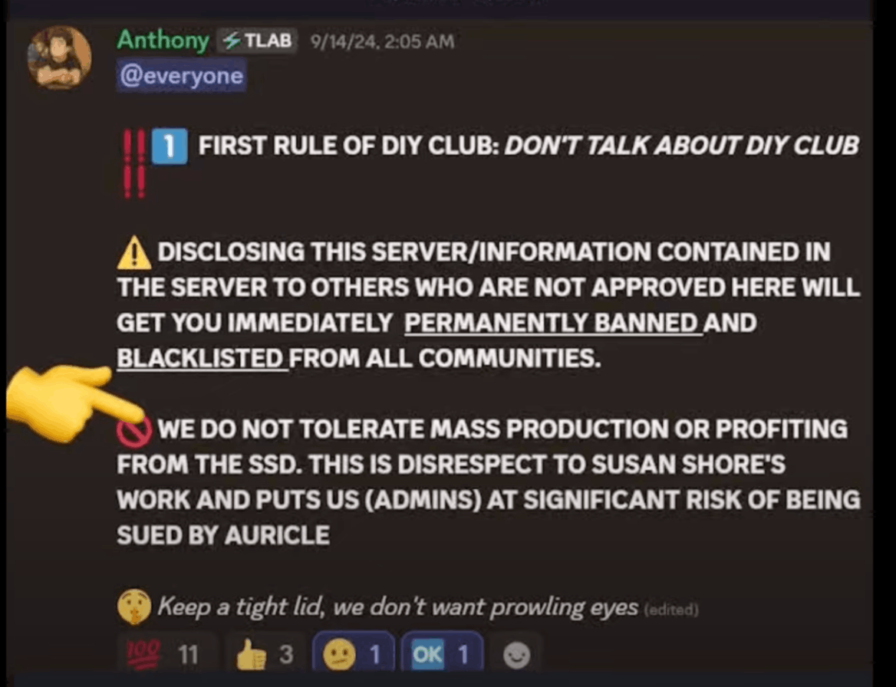
In October 2024, Anthony released a video on his YouTube channel titled "PSA: Dangers of DIY."He warned viewers against attempting to build their own versions of Shore’s device, describing certain independent DIY attempts as “very hazardous” and likely to cause harm. The video served to discourage people from seeking out the DIY community or attempting independent builds. Yet Anthony himself had built his device using the schematics that had been created and shared within that same DIY community. Following his August videos claiming dramatic personal improvements, interest in accessing his device had been growing. The implicit message was clear: building your own device was reckless and dangerous, but his version would soon be available.
Despite warning members not to mention the project outside the server, Anthony posted what he described as a "real-world study" of the DIY SSD on Reddit, and released a corresponding video on his YouTube channel. The Reddit post was formatted to resemble an academic paper, complete with labeled sections for abstract, methods, results, and discussion. He presented himself as "Anthony Nakamura (PhD student)" and gave the study an academic-sounding title about bisensory neuromodulation and spike timing-dependent plasticity. The title, however, misspelled hyperacusis, one of the primary conditions discussed in the paper. The paper made no mention of the community members whose schematics and technical contributions had made the DIY SSD possible, presenting the work as entirely his own.
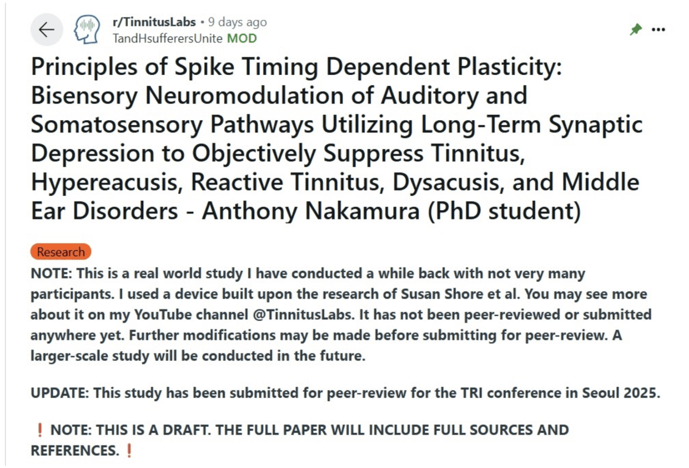
The study reported outcomes from ten participants and claimed that within six weeks, seven had achieved what it described as “full suppression” of symptoms. The conditions listed went well beyond tinnitus and included reactive tinnitus, tensor tympani syndrome or middle ear myoclonus (involuntary middle-ear muscle contractions), loudness hyperacusis, and dysacusis. The post further claimed that two additional participants achieved “full suppression” during weeks nine to ten, and that a tenth participant later became a responder as well. Taken together, the study ultimately asserted that nine out of ten participants achieved “full suppression” within ten weeks of treatment.
Shortly after the post began circulating, it was challenged by members of the DIY server. One member, who had been tracking outcomes for the group, stated that the numbers presented in the study were incorrect. At the time, the DIY project had only included seven participants total, not ten. Of those seven, only four had shown any improvement, contradicting Anthony's claim of seven responders. Minimum masking levels and before-and-after hearing tests had not been conducted for most participants, contradicting Anthony's assertion that results were objectively confirmed. Finally, no one in the group had given Anthony permission to publish their treatment outcomes as part of a study.
When challenged about the fabrications, Anthony said he had made up the data because the person collecting the outcomes for the group had not replied to his requests. When asked what made him think he could publish data that wasn't his as if it were his own, he stated: "I don't give a shit if it's my own or not."
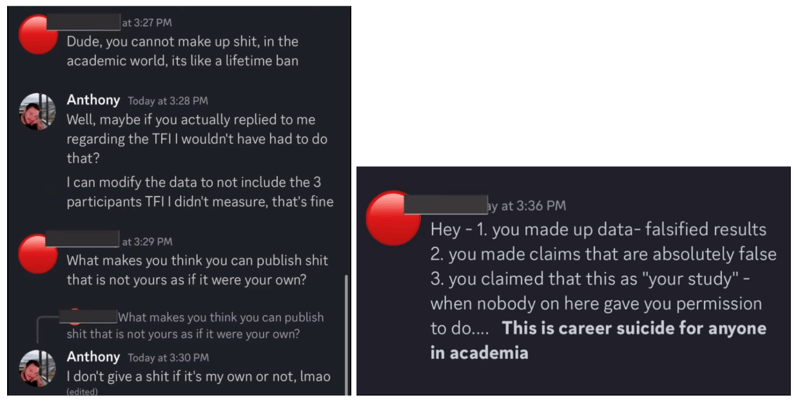
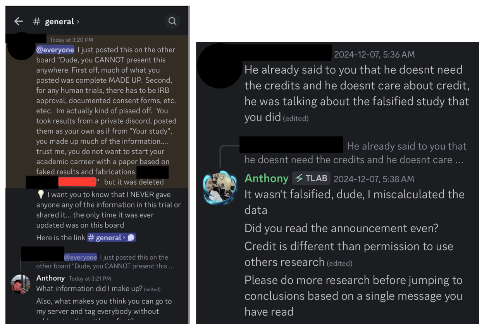
Only after this confrontation did Anthony remove the Reddit post and the corresponding video. The following day, he posted a public explanation in Tinnitus Labs, framing the incident as an error caused by "skewed data," calculation mistakes, and a lack of peer review. He thanked the community for catching the errors before he submitted the work to more formal venues. That explanation made no mention of what the confrontation had revealed: that he had fabricated data because the underlying measurements did not exist.
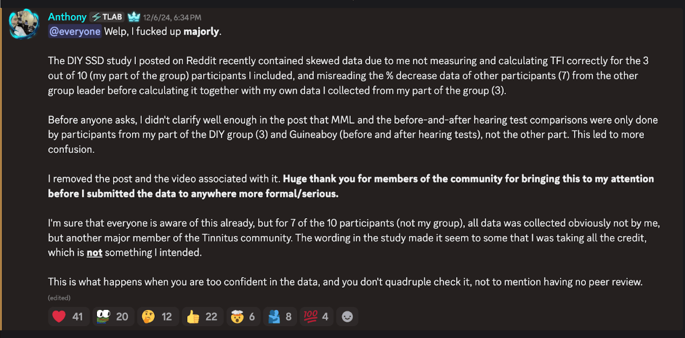
In November 2024, Anthony began organizing what he described as an informal trial for his own version of the DIY SSD inside Tinnitus Labs. Participants were arranged into batches based on their reported severity, with the most severe cases placed first in line. At this stage, no devices had been shipped, no polished version existed, and nothing resembling a formal study had been designed. What Anthony referred to as a "trial" functioned primarily as a paid reservation list for a device still under development. Participants were asked to pay $400 to reserve a unit. Anthony said the amount reflected the cost of components, assembly time, and shipping.
Inside Tinnitus Labs, Anthony presented the trial as a structured and scientific undertaking. He often mentioned the possibility of incorporating the project into a future PhD thesis, though he never provided clear details. He described his work as "community research," framing the trial as a collaborative effort to collect data and evaluate the device's effectiveness. At the same time, Anthony restricted where participants could discuss the trial. Discussion was only permitted in a few private channels inside Tinnitus Labs. Mentions in public areas were discouraged or removed. These restrictions echoed the secrecy he had enforced in the DIY server.
Before being added to a batch, participants had to sign a liability waiver and submit photos of their driver's licenses or passports. Anthony said the identification requirement was needed to avoid attention from patent investigators. Yet Anthony himself remained completely anonymous. He disclosed no verifiable personal information beyond saying he lived in Russia. In a Reddit exchange, he stated openly that "Anthony" was not his real name and that it was "not even close" to it. Within the community, very little was known about who he actually was.
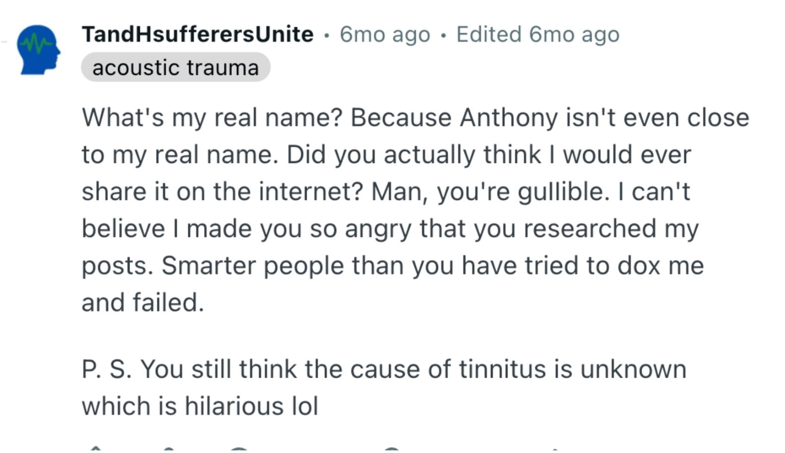
Anthony worked to prevent trial participants from engaging with the DIY community. Inside Tinnitus Labs, he announced that anyone who joined the DIY server would be banned from the trial. He reinforced this by actively monitoring the DIY server's welcome channel. When someone from Tinnitus Labs appeared, he contacted them directly to remind them of the consequences. Participants were forced to choose between accessing the free, open-source materials that had originally been created for building DIY SSDs, or maintaining their place in the paid trial they had already committed to.
After collecting the initial payments, the trial entered a prolonged development phase. Anthony said he was working with several local engineers, most often mentioning an engineer named Sergei. Despite this recruited help, progress remained slow. As months passed without a finished device, the situation became increasingly difficult to reconcile. The engineers were not being asked to invent the device from scratch. Sergei was working from the schematics that had been developed in the DIY server. By contrast, members of the DIY community had been building functioning units far more quickly, often working alone, without formal engineering backgrounds or paid assistance.
During this extended wait, the channels inside Tinnitus Labs became concentrated hubs for what the community jokingly called hopium. People posted about being "one day closer," and talked about what the device might mean for their future. Anthony often spoke about the device in a way that suggested it could play a major role in people's recovery, which strengthened the sense that everyone was moving toward something important together. At the same time, he frequently suggested that enrollment could close at any moment, framing the trial as a growing strain on his time, resources, and PhD work. The combination of shared optimism and the implied threat of cutoff created an atmosphere of urgency.
Anthony portrayed himself as making enormous personal sacrifices for the project. He claimed to juggle a day job at a major consulting firm, a PhD program, and his own consulting business, in addition to running the trial. He mentioned separate business ventures including owning a cat café and an AI chatbot website. He often framed the trial as a personal financial strain, saying he was losing money by working on the trial instead of focusing on his consulting work. Despite this demanding schedule, he maintained a constant online presence, making it difficult to understand when he found time for the commitments he described. This framing made many members feel grateful for his effort and strengthened their loyalty to the project.
Anthony's background was equally ambitious. He presented a career path spanning molecular biology, medicine, IT, business, corporate consulting, and law, before pivoting to computational neuroscience. He positioned himself as coming from an academically elite background, mentioning olympiad participation and multiple PhDs in his family. These credentials were often referenced when questions of expertise arose. Within the community, Anthony was viewed as exceptionally capable and uniquely brilliant, selflessly sacrificing his time and resources to help others when no one else would. This perception made members less likely to question the improbability of his background.
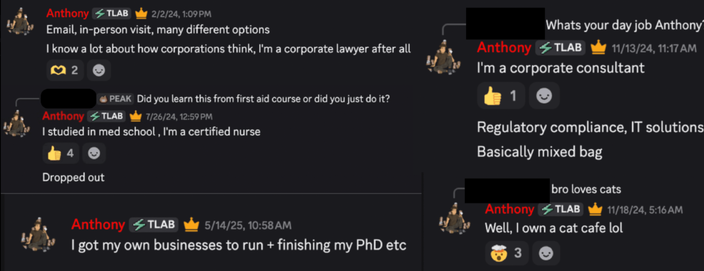
As this perception took hold, some participants began expressing a desire to financially support Anthony so that he could devote more time to developing the device. In response, Anthony opened multiple monetization channels. He created a membership program on his YouTube channel with paid tiers ranging from $3.99 to $149.99 per month. Members were given special Discord roles, making their financial support visible within the community. Anthony also accepted personal donations, sometimes in the thousands of dollars. In at least one instance, a member made a substantial donation in order to secure a spot in Batch 1, allowing them to avoid the extended wait that later batches would face.
Inside the DIY server, concerns began to surface about Anthony’s decision to sell the device through his trial. Several members argued that commercializing a device derived from Dr. Shore’s patented work was illegal and unethical. They also pointed out that the parts required to assemble the device cost roughly $40–$50, compared to the $400–$450 Anthony was charging at the time. Anthony responded by saying his design used higher-quality components and was more advanced than earlier DIY builds. When ethical concerns persisted, Anthony dismissed them outright, stating that ethics were “irrelevant” and that “the world is not a charity.”
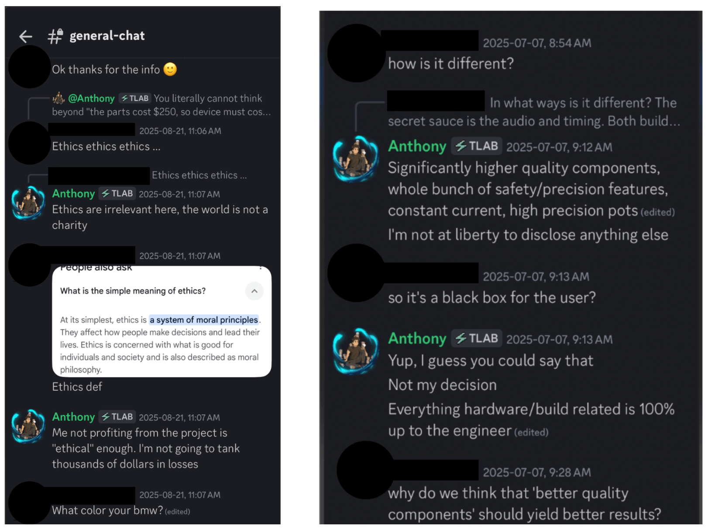
After months of delays with Sergei's version, Anthony shifted to working with an engineer from the DIY server whom he called "GG" (short for "Guinea Guy"). GG had built a DIY SSD for himself and used it during his own treatment. Anthony began describing GG's involvement as enabling more advanced features, including customized signal timing and remote parameter adjustment. The device built from this collaboration became known as the Guinea Guy Device, or GGD. In December 2024, GG posted electrical schematics and photos of an assembled circuit board to the DIY server, showing an early version of the design that would later become known as the Guinea Guy Device (GGD). The images were later deleted.
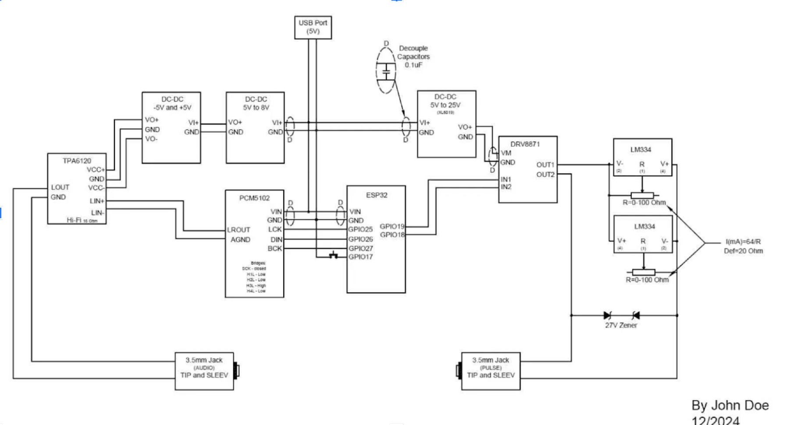
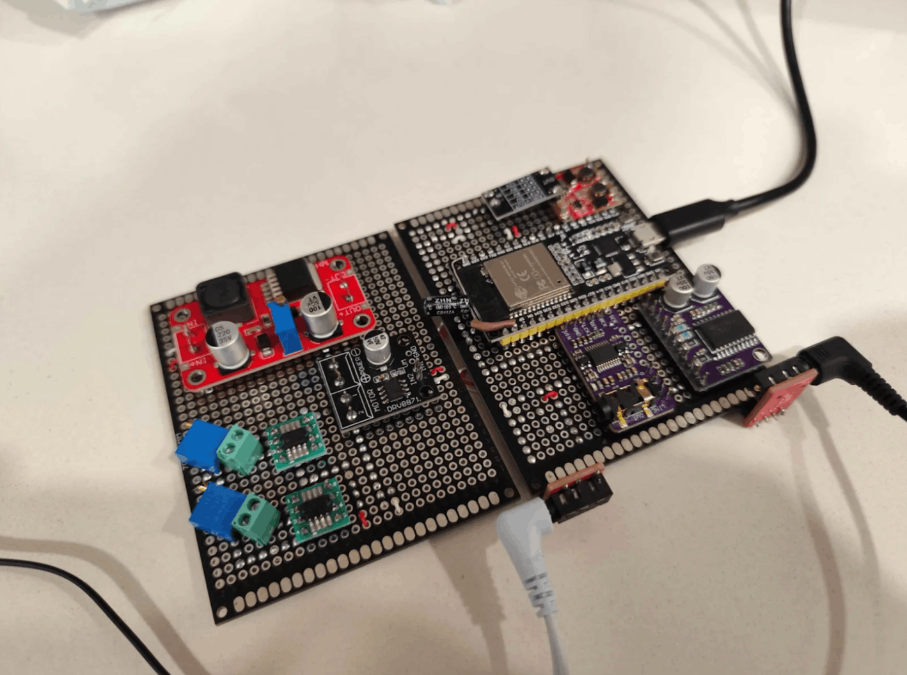
Around this time, a member of the DIY community had made an important discovery. The timing parameters DIY builders had been using (the precise interval between the sound and electrical stimulation) did not match the timing Shore had validated in her clinical trials. In response to this finding, Anthony told his followers in Tinnitus Labs that he was scrapping the old version of his device and starting over with the corrected timing. When he explained this change, he credited GG with discovering the correct parameters.
The attribution was misleading. GG had experimented with different timing parameters during treatment, and by coincidence, one variation matched Shore's specifications. He had no idea these were the correct settings. The actual discovery had come from another DIY community member, who identified Shore's correct timing specifications by analyzing her published research. Anthony never acknowledged the member who had actually made the discovery.
During this transition, Anthony framed the GGD as a significant technical step forward. In one update video, he described the rebuilt device as “the epitome of any type of DIY Susan Shore device that could possibly be built.” He attributed earlier failures to the incompetence of Sergei and positioned the GGD as a finished and optimized build rather than an experimental prototype. Following this change, development appeared to move more quickly, and devices were prepared for shipment within a relatively short period of time.
As the project entered its final pre-shipment phase, one of the Tinnitus Labs moderators, Luca, became Anthony's primary assistant. Luca compiled a comprehensive FAQ from information provided by Anthony, explaining the treatment protocol and payment process, then took on the responsibility of shipping Batch 1. Anthony traveled to Italy to meet him, and the two tested the first units together before Luca began mailing them to participants. By this point, the waitlist had expanded into the hundreds.
In mid-2025, approximately eight months after Anthony first collected payments and announced the trial, the first batch of devices was finally ready to ship. When Anthony announced Batch 1 was shipping, the atmosphere shifted from anticipation to celebration. Participants followed the process through photos, tracking updates, and server messages. Though only a fraction of the waitlist would receive their GGDs in this batch, the community treated the shipment as validation that their long wait and emotional investment had been worthwhile.
As participants prepared to begin treatment, Anthony outlined a six-week protocol he said was necessary for the GGD to be effective. He emphasized that outcomes depended on maintaining a stable nervous system throughout the treatment period. Participants were advised to avoid activities and substances he believed could increase inflammation or disrupt neurological stability, including intense physical exertion, sugar, caffeine, sexual activity, and spicy foods. The protocol required a strict low-histamine diet and significantly reducing stimulation by remaining indoors and minimizing exposure to noise for six weeks. Participants were even told they might need to take time off work to adhere to the protocol.
At various points, Anthony advised participants to taper off of their medications, saying that anything in their system could interfere with the GGD's efficacy. In doing so, he was effectively playing the role of doctor despite having no verified medical qualifications. Advising people with fragile neurological conditions to make changes to medication dosing carried serious risks. Even gradual changes to medication dosing can cause withdrawal, which in turn can permanently worsen tinnitus and hyperacusis symptoms. The rules also stood in sharp contrast to the official Shore protocol, which involves daily device use but does not require medication changes or any of the additional lifestyle restrictions Anthony imposed.
Inside the trial, these rules quickly became more than simple instructions. Following the protocol was treated as a sign of commitment. Many participants saw strict adherence as proof that someone truly wanted to get better. When people questioned protocol or said it seemed extreme, the pushback was immediate. People who expressed worries were often told they must have "mild" symptoms, meaning they were not suffering enough to understand what severe cases required. Others were told they lacked dedication or could not handle six weeks of discomfort. This pressure made it difficult for anyone to voice concerns.
Before using the device, participants were required to match their tinnitus frequency using tone-matching software. The device's audio output needed to be calibrated to each person's specific tinnitus tone in order to deliver the bimodal stimulation treatment. For many people, especially those with severe cases or strong sensitivity to digital audio, this step itself was risky. Identifying a tinnitus frequency meant listening to sustained pure tones, something many of the most sensitive participants would normally avoid. When participants raised safety concerns about this process, Anthony repeatedly emphasized that the treatment was safe, including for severe hyperacusis and noxacusis cases.
Despite these assurances, the tone-matching step would later be linked to some of the most severe harm reports from the trial. One of the more striking examples involved a member named Whitney, who had been one of the strongest public supporters of the project. She encouraged others to stick closely to the protocol, dismissed outside criticism, and expressed total confidence in the device. But when she began the protocol, the tone-matching step triggered a sharp escalation in her tinnitus, pushing her into a level of sound sensitivity she had never experienced before. The worsening became so severe that she became largely bedbound and increasingly suicidal. Even as her condition deteriorated, she blamed herself for rushing through the tone-matching phase, rather than recognizing that the process itself was harmful. The culture of loyalty within the trial left Whitney unable to question the treatment or recognize what was happening to her.
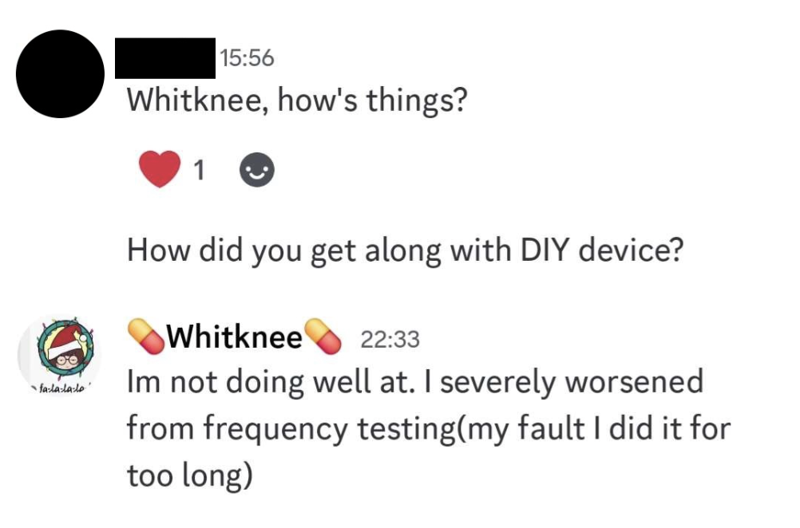
Another early case involved a participant who developed noxacusis for the first time during the preparation phase. He had entered the trial with tinnitus alone, but during the tone-matching process, the pure tones triggered immediate sharp ear pain that continued after the session ended. This marked the onset of noxacusis, a condition defined by physical pain in response to sound and often considered one of the most severe and disabling hearing-related conditions. It can force individuals to withdraw from everyday life as ordinary sounds become intolerable. His symptoms persisted, making his case one of the earliest and most severe reports of harm linked to the project.
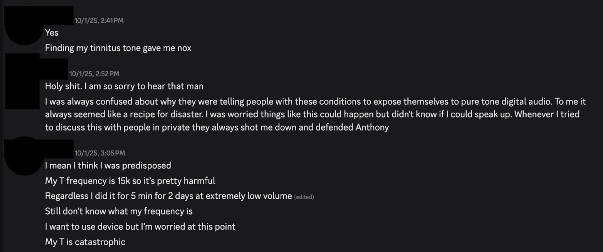
Once the first batch of devices was shipped and delivered, participants began their six-week treatment periods. By this point, reports of tone-matching harm had already circulated within the community, and some participants chose not to begin treatment. As treatment got underway, Anthony shared periodic updates in the server about how users were responding. In early messages he reported that a small number of participants were already seeing improvements. He cited several cases of reduced tinnitus symptoms and said that a handful of users were experiencing reductions in noxacusis-related pain.
As more participants began using the device, Anthony repeatedly referenced an overall responder rate of approximately 65–70%, describing this as the share of users who had seen "any improvement whatsoever." This framing set a very low threshold for what counted as a response.
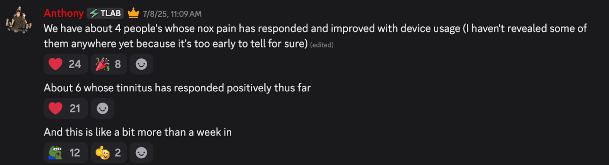
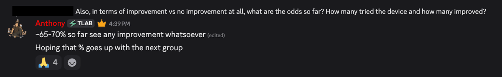
To reinforce these claims, Anthony released a video presenting data from ten users, though not all had finished the full six-week treatment. He described several cases as showing "significant" or "very significant" improvements in tinnitus, while acknowledging that some showed "no change." Because trial members were not permitted to share their own outcomes publicly, the video served as the primary source of information about results. However, when community members later reviewed the participant list and compared outcomes privately, the 65-70% responder rate Anthony had been claiming did not align with what people were reporting to one another.
For a time, many participants accepted Anthony’s summaries at face value. As weeks passed, participants began to notice a growing disconnect between the optimistic picture presented by Anthony and the absence of firsthand updates from people who were said to have completed the treatment. Over time, the gap between what was being reported publicly and what members could confirm for themselves became increasingly difficult to ignore.
As more people completed their six-week treatment without any updates appearing in the server, some participants began asking why none of the supposed responders were returning to share their results. Instead of addressing the question, Anthony responded that revealing who had responded positively would amount to “doxxing.” The explanation was difficult to take seriously, since no one was asking for names, personal details, or any information that could identify a specific individual. Members were simply trying to confirm whether responders existed at all. When the question persisted, Anthony offered additional explanations, saying that many responders were no longer active on Discord and did not feel any obligation to report back. He also suggested that people with positive outcomes tend to avoid attention because they do not want to be flooded with questions.
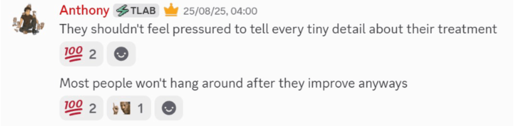
Out of roughly 60 devices shipped in Batch 1, only one participant returned with a clear recovery story. A user known as Hannibal who had lived with moderate to severe tinnitus since 2022, said the condition had forced him to retire from his work as a lawyer and left him suicidal during his first year. According to his account, he began seeing improvements after several weeks of using the GGD and eventually experienced stretches of up to four days without continuous tinnitus. His update circulated inside the server and stood out precisely because no other unambiguous success stories emerged during this period. One other user did report improvement, but he had also started a new medication around the same time he began using the device. This overlap made it unclear whether his improvement could be attributed to the GGD itself.
As the Batch 1 treatment period came to an end, participants began privately comparing their experiences to Anthony's claims and realized the numbers did not line up. Because every user was tagged in the #ggd-received channel when their device arrived, it was possible to identify who had actually received a unit. A small group of participants then reached out privately to each person in Batch 1 to ask about their outcomes.
The resulting list painted a clear picture of the trial's actual outcomes. Out of roughly 60 devices shipped in Batch 1, 28 recipients never began treatment at all. Of the approximately 30 who did start the six-week protocol, the results were stark. Seven participants reported clear worsening during device use. Some developed new tones they had not experienced before. Others reported sustained spikes in volume or intensity that persisted beyond the treatment sessions. Several described increased reactivity, where sounds that had previously been tolerable now triggered flares. Some of these worsenings appeared after just a few sessions, while others emerged after weeks of continued use. One participant improved initially, then spiked back to worse than baseline. Another 14 reported no change or no improvement whatsoever after completing the full six weeks of treatment.
Only five participants reported any improvement at all. Four of these were modest at best: a 15% reduction in one case, suppression of ear pain alone in another—an outcome that had only been framed as a treatment target by Anthony, not by Shore’s research, which did not study pain or test the device on noxacusis-related symptoms, and two others describing simply "small improvement" or "some improvement." Without a placebo control group, it was impossible to determine whether even these minimal changes resulted from the device itself or from expectation, natural symptom fluctuation, or other factors. At this stage only one participant—Hannibal—reported a clear and substantial response, experiencing stretches of up to four days without continuous tinnitus.
Inside the trial channels, the participants who chose not to begin treatment were often questioned or portrayed as lacking commitment. But their decision was based on documented reports of harm from those who had already started. At this stage, the number of people who worsened from device use alone exceeded the number who reported any improvement. The compiled outcomes also revealed that several people Anthony had counted as responders in his video had not even started the treatment at the time the video was recorded. The 65-70% responder rate Anthony had been claiming bore no resemblance to reality.
Another pattern became clear when participants compared trial results to Anthony’s early claims around the DIY SSD. The rapid improvements Anthony described in his early videos were never reproduced during the trial. GGD participants used what Anthony described as a higher-quality device, followed a strict protocol, and used high-end earbuds and equipment. Even under those conditions, no one reported rapid or profound relief after a few sessions, or at any point during the six-week treatment. By contrast, Anthony said his initial success with the DIY SSD came from sessions done using ordinary gaming headphones, and neither Anthony nor the early DIY users featured in his videos were following any strict protocol. Even with stricter controls and upgraded equipment, no comparable improvements were observed during the trial.
As these disappointing results became apparent, Anthony began distancing himself from the trial's day-to-day operations. He replaced Luca as his assistant with Jo Ann, a long-time Tinnitus Labs member from Poland. Jo Ann had developed a close relationship with Anthony during her time in the community, often referring to him as her son, and had been expressing interest in assisting with the project for months.
Anthony said he needed to step back from the trial to focus on his PhD, and participants were instructed to send their updates to Jo Ann and follow her guidance. She assumed responsibilities that included device setup, tone matching, and ongoing treatment support. The device's configuration was password-protected, and without Jo Ann's assistance, participants could not configure or use their devices. Jo Ann began charging a $150 "treatment support" fee for these services, which she described as "non-negotiable." The fee was later increased to $650. In messages to the server, she portrayed her role as spanning "IT, audiology, sound engineering, otolaryngology, neurology, psychology, and more."
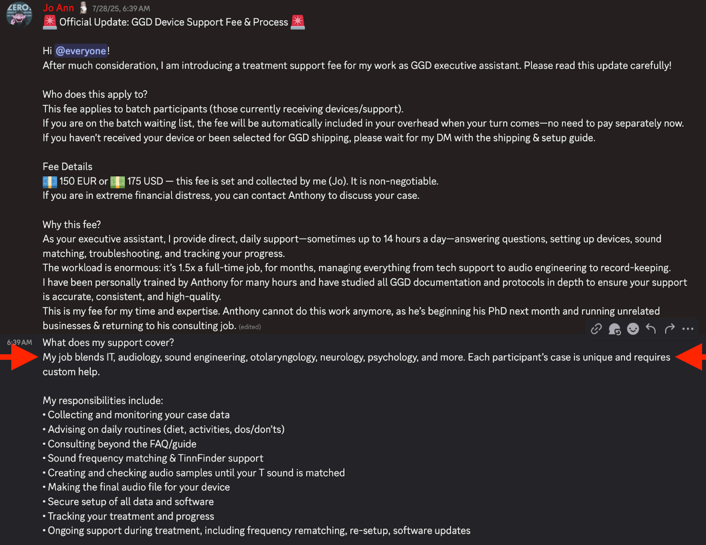
Despite having no formal training in any of these fields, Jo Ann became the primary point of contact for participants seeking advice about symptoms, medication concerns, and whether reactions to the treatment were considered acceptable.
One participant's experience illustrates the dangers of this arrangement. Before joining the trial, he had been managing his condition on an antidepressant medication called mirtazapine. His tinnitus was under control—he was working and able to travel with his family. He tapered off the medication because he believed it would improve his chances of responding to the device. The taper went very badly, leading to acute withdrawal symptoms and severe destabilization. He developed hyperacusis for the first time, and his tinnitus became highly reactive. During this period, he lost a significant amount of weight and eventually required hospitalization, where his medications were reinstated and additional drugs were added to help stabilize him.
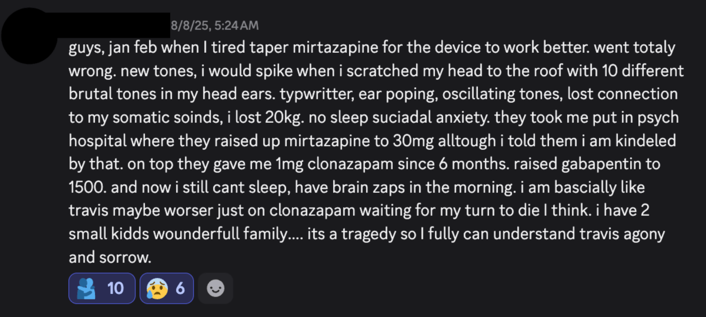
After he returned home and shared what had happened, Jo Ann told him he was now on too much medication for the device to work. Despite knowing the taper had caused a medical crisis, she encouraged him to taper again, suggesting that coming off the medications would significantly increase the chances of success.
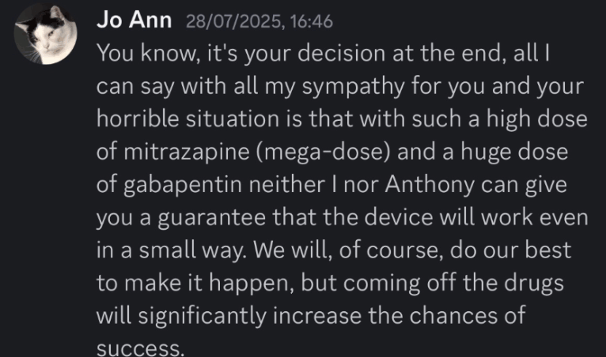
As of January 2026, he remains bedridden and has applied for assisted suicide in Switzerland. In a private message, he wrote: "I am dying. I dunno how long i can go on. Applied for assisted suicide in Swiss. I have 2 kids family. I am bed bound."
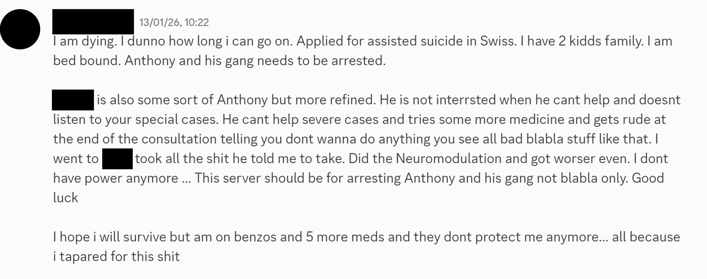
When concerns were later raised about the role this guidance played in people’s worsening, the reaction inside the server added another layer of harm. Participants who followed Anthony and Jo Ann’s advice were often blamed for the consequences and, in some cases, were openly mocked and called stupid for how they handled their medication tapers. There was little empathy for what they had gone through. Jo Ann continued to insist that she saw a pattern suggesting medication interfered with treatment outcomes, even though the claim was based on scattered anecdotes rather than evidence. At the same time, Anthony began to take a softer position and suggested that medication use might not matter as much as he had previously implied. The lack of consistent guidance left participants confused and unsupported, particularly those who had made serious medical decisions because they believed it was necessary for the treatment.
Despite accumulating evidence of harm, the trial did not slow down. No warnings were issued, no parts of the protocol were reevaluated, and new participants were not told that others had already reported severe reactions. Anthony’s own messages during this period reflected the same disregard for safety. In one exchange, he described the server as having “a massive sample size of cases to immediately experiment on,” suggesting that he viewed participants as material for experimentation rather than as vulnerable people whose safety and well-being required careful attention.
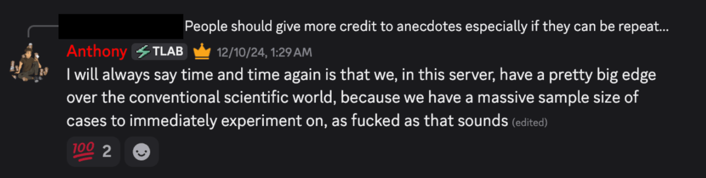
Anthony included some of the most severe cases in the community in batch 1, even though they were the least suited to test a homemade device with no safety oversight. With participants that vulnerable, any spike or worsening carried consequences they could simply not afford.
As reports of harm accumulated, a pattern emerged in how adverse outcomes were explained. Worsening was rarely attributed to the device itself. Instead, participants who experienced spikes or failed to respond were told the problem was their own failure to follow the protocol. Participants were also told they might need a full re-setup of their device, suggesting the issue lay with how the equipment had been configured rather than the treatment itself. Even in the most severe cases of worsening, participants were simply told to pause the treatment temporarily and resume once their symptoms stabilized. This guidance reinforced the expectation that participants should stay on the protocol even after negative reactions. When someone reported worsening, the response centered on what they had done wrong rather than on what their reaction might suggest about the device's safety.
As concerns about safety grew, the same group who had independently compiled the Batch 1 outcomes began documenting harm reports. These included symptom worsening, new symptom onset, and temporary spikes. The harms occurred in multiple contexts: medication tapering encouraged by the protocol, the tone-matching process, and device use itself. The document ultimately contained 17 reports of harm, drawn from direct participant accounts and additional reports gathered within the trial. Taken together, the compilation outlined a pattern of harm that was not reflected in the trial’s public reporting.
The 17 documented cases likely understated the full scope of harm. Several participants stopped communicating with the community entirely. Some had been active members for years before they disappeared. The group compiling harm reports only documented cases where participants had directly shared their experiences—many participants were never contacted or followed up with at all. No systematic effort was made by those running the trial to check in on participants who went silent or to verify their wellbeing. In a proper clinical trial, loss of contact with participants would trigger mandatory welfare checks and safety protocols. Here, there was no follow-up at all.
Despite a growing number of reports documenting harm, the project’s momentum did not appear to slow. New participants continued to join, additional batches were planned, and the dominant tone inside Tinnitus Labs remained focused on hope and forward progress. While concerns about safety circulated quietly among smaller groups, they did not coalesce into sustained or visible criticism within the broader community, even as the risks became clearer behind the scenes.
The first significant public challenge came when a community member named Daniel Iger released videos questioning the trial's legitimacy. His videos included screenshots and material from private trial channels, making internal discussions public for the first time. Daniel argued that the trial was not structured in any meaningful way. He pointed out that the rule banning participants from sharing their results was presented as a way to protect data integrity, yet Anthony’s own public updates carried the same potential to shape expectations. Daniel also noted that the trial had no control group, making it impossible to determine whether any reported changes were genuine or driven by expectation alone. He added that the strict protocol surrounding the treatment would likely amplify placebo effects and expectation bias, further complicating interpretation of any improvements.
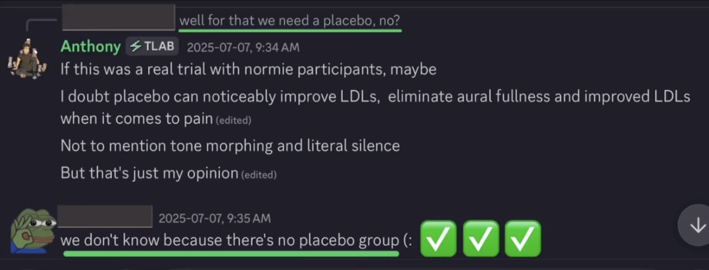
When Daniel posted his videos, the reaction was fast and hostile. Members of Tinnitus Labs dismissed his concerns, mocked him in the comments, and treated his criticism as a personal attack rather than a substantive challenge to how the trial was being run. Inside the server, Anthony reacted just as sharply. He framed the videos as draining his time and energy and told members that dealing with the fallout made him less willing to continue the project. He warned that if outside negativity persisted, he might end the trial altogether. This created the impression that the entire community could lose access to the device because of one person’s comments, even though no trial participants had taken part in the criticism.
Shortly after the videos gained attention, Anthony released a cost breakdown for the device. In the same announcement, he said he was raising prices by 100–150% in response to the criticism he was receiving, adding that if he was "going to be called an asshole anyway," he might as well "make it worth [his] time." This explanation conflicted with his repeated claims that pricing was driven solely by material and manufacturing costs.
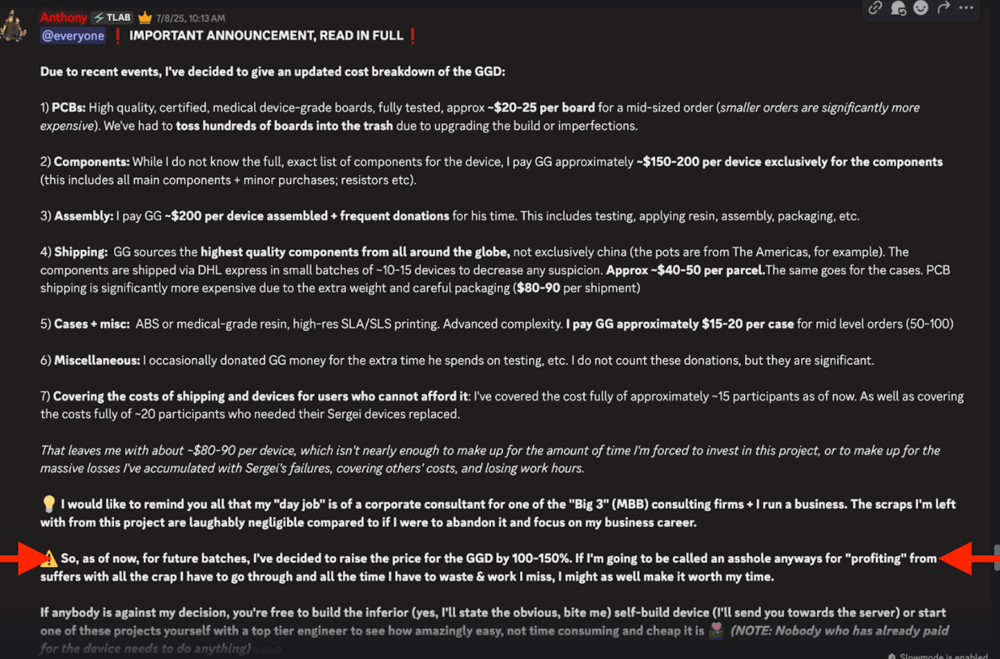
The breakdown itself was misleading. Anthony claimed shipping costs were $40–50 per parcel for components and $80–90 per shipment for PCBs. But he also said each parcel contained ten to fifteen devices. That means the shipping cost per device was only $3–5, not $40–50. By listing the cost per parcel rather than dividing it across the devices in each shipment, the breakdown made shipping expenses appear far higher than they actually were per unit.
Despite these discrepancies, the price increase went into effect immediately, raising the device cost to $650. The financial burden fell hardest on people already facing severe economic hardship. Many participants were unable to work due to their conditions and had exhausted their savings trying to find relief. Messages inside the server revealed people weighing participation against medical debt, unstable housing, and ongoing health crises. In one post, a single mother wrote that she needed brain surgery, was going through a divorce, and was already "drowning in medical bills," yet still said she would "try [her] best to come up with the funds." For many, the device represented not just a financial gamble, but their entire financial reserves—spent on what they believed might be their only chance at recovery.
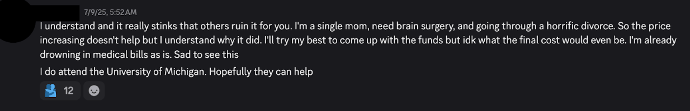
Another confrontation occurred when a trial participant known as Kellz asked why more supposed responders had not returned to share their results. He also raised the issue of a conflict of interest in having the same people collecting money from the trial be the ones reporting its outcomes. Anthony treated the questions as a serious accusation of dishonesty, even though they were presented as straightforward observations. Kellz clarified that he had not intended to allege wrongdoing, but the situation escalated quickly and he was banned from the server. In response to the ban and the questions Kellz had raised, Anthony posted a message to the server outlining what he saw as his options. The message revealed the extent to which he viewed accountability as a threat.
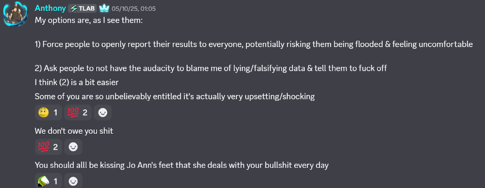
As criticism of the trial continued, Anthony's response escalated beyond moderation and into overt intimidation. After learning that information about the trial was being shared outside the server, he warned that anonymity would not protect those involved. In one message, he reminded members that he retained copies of their identification documents, stating that "it doesn't matter if you deleted it from Discord." The message signaled that criticism of the trial could carry personal consequences beyond removal from the server.
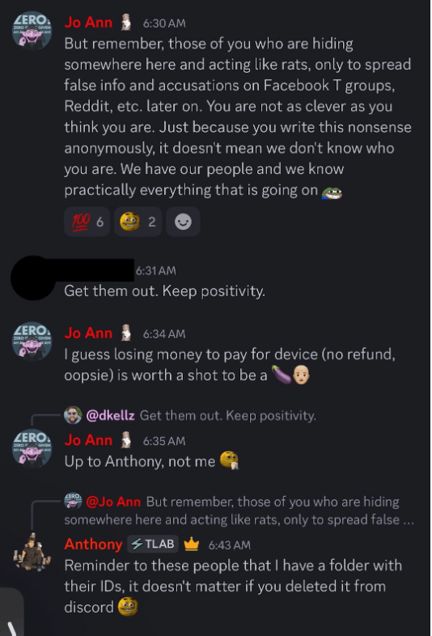
Anthony announced a new requirement in response to his fear that certain individuals were casting him as untrustworthy. He said that participation in the trial would now require participants to disclose their treatment results through a short interview, either text-based or on a voice call, which would be released publicly on Discord or YouTube.
When members later asked about this requirement, Anthony walked it back. He said participants were only expected to share treatment details and were not required to participate in interviews. More importantly, he stated that he was no longer collecting or tracking outcome data at all, saying that tracking users was no longer his responsibility and referring questions to Jo Ann. Jo Ann confirmed that it was up to individuals to share their results if they chose to.
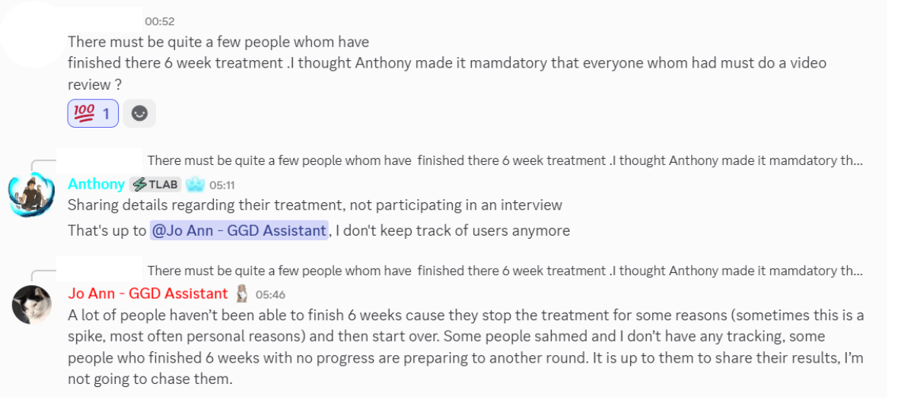
When asked why outcomes were not being systematically collected or shared, Anthony often framed the problem as one of excessive complexity. He argued that the group was too variable, that too many factors influenced results, and that inconsistent adherence to the protocol made outcomes impossible to interpret. In this framing, deviations from the protocol were used to explain unclear or negative results, and he suggested that this made it difficult to determine whether reported outcomes reflected the device itself. At one point, he said he might bring in a data analyst because of how difficult the data was to organize.
Despite walking back the interview requirement and claiming he was no longer tracking outcomes, Anthony began releasing video interviews with select participants. The interviews were audio-only, with no video footage. He featured users identified as Michael, Balint, and Karin, each describing significant improvements in their symptoms. Michael claimed a 40-50% reduction and said his tinnitus had gone from 3-5 out of 10 to 1-3 out of 10. Balint reported that one of his tones had completely disappeared and his reactivity had decreased dramatically. Karin described a 30-40% reduction and said her reactivity was "nearly gone." What stood out about these interviews was that none of these individuals had been active or visible members of the community before their success stories appeared. Unlike Hannibal, whose story participants could verify through his known presence in the server, these responders remained voices without faces or community history.
At this stage, participation in the trial required a substantial financial commitment. The price of the device itself had risen to roughly $550–$650, with additional shipping costs typically around $70. Participants were required to purchase specific high-end earbuds (most commonly the Sennheiser IE4), as well as additional setup equipment, including a compatible power bank, electrodes, and medical tape. On top of these expenses was Jo Ann's $650 treatment support fee. For many participants, the total cost ultimately approached $1,400, well above what they had initially expected to pay.
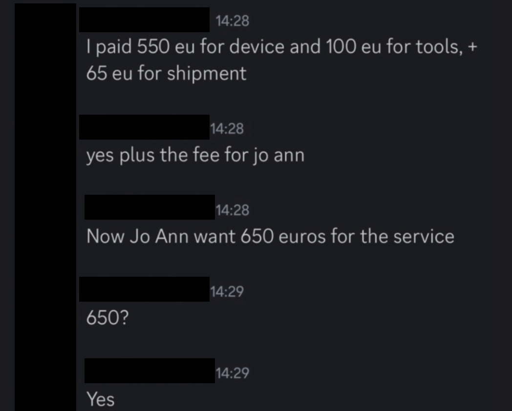
The rising costs prompted some members to look more closely at the financial side of the project. One disillusioned participant exported the transaction history from the crypto wallet address Anthony had provided for payments and found that, as of December 2025, it had taken in more than $150,000 over the course of the trial. What raised further concern was the pattern of outgoing payments. Instead of simple withdrawals to a single account, the funds were routed through many intermediary wallets before converging in a small cluster of sink wallets connected to various exchanges. The transfers resembled the layered routing pattern associated with cryptocurrency tumblers, services designed to obscure the origin and destination of funds by mixing them with other transactions. This was not the straightforward spending one would expect from legitimate project expenses.
When questioned directly about the $150,000 figure, Anthony did not deny it. He responded by stating that the project's overall costs were "around $100–150k" and maintained that, despite the scale of funds involved, he was not making any profit.
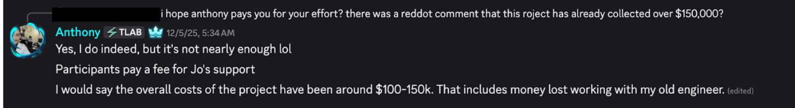
In January 2026, after continued financial scrutiny, Anthony released a cost breakdown spreadsheet with portions obscured. The visible sections presented per-unit totals ranging from roughly $700 to over $1,100, figures that were used to argue the project had not generated profit.
The electrical schematics published by GG showed exactly what was inside the device: standard electronic components that are widely available and commonly used in hobbyist projects—the kinds of parts anyone can order online from electronics suppliers. Members of the DIY community had been building functioning devices using these same types of components for months, consistently reporting material costs in the $40–50 range, even when accounting for circuit boards, 3D-printed cases, wiring, and assembly.
The spreadsheet showed a total per-unit cost of $713.75 to $1,128.75. This included the component costs as well as a labor charge of $240 to $480 per unit. The schematics confirmed what the DIY community had been saying all along: the parts themselves were inexpensive. The spreadsheet's total was not a reflection of material costs.
As financial scrutiny intensified, attention increasingly shifted beyond Anthony himself to the expanding role of Jo Ann, the incentives surrounding her involvement, and the broader financial structure that had grown around the trial.
Luca had served as Anthony's assistant for many months and contributed significantly to the project's early operations. A few months after Batch 1 was sent out, Anthony announced that Jo Ann would be taking over device setup and shipping. Luca was removed from his assistant role, with no clear explanation given to the broader community. In a private server used by the women of the community, Jo Ann told others that Luca had stepped down because the workload was too overwhelming and that he wanted time to focus on his treatment. However, screenshots of private messages between Luca and Anthony show no indication that Luca requested to leave the assistant role. In those same messages, Anthony stated that the role was reassigned because Jo Ann "severely needs the extra money," suggesting a different motivation for shifting the responsibilities.
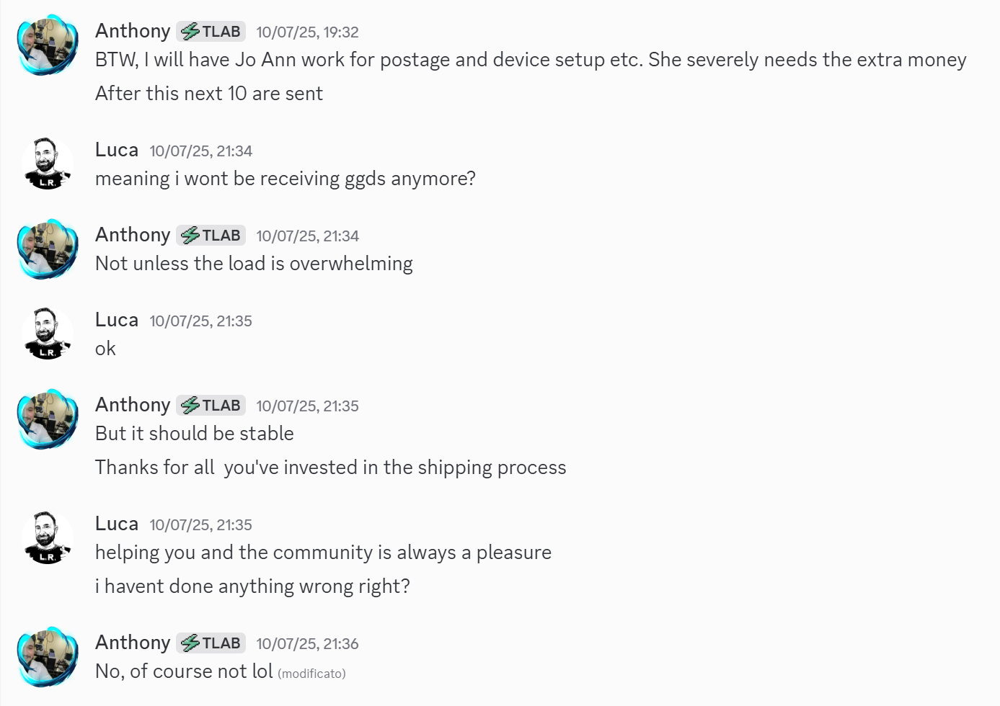
Jo Ann's financial situation was well known within the community. She often mentioned that her husband had been laid off and was struggling to find stable employment. Inside the women’s server, she talked about needing money and the financial pressure she was under. This context aligned with her motivation to pursue a paid role within the project.
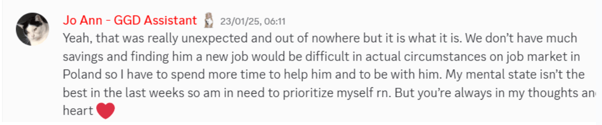
When Jo Ann introduced her treatment support fee, it called attention to the fact that others had volunteered to do the work she was now charging for. Anthony posted a message inviting anyone “open to 20–30 hours of training and helping everyone with their setups” to contact him. Several members stepped forward, interpreting the message as a genuine request for help. Their willingness to help left Jo Ann in an embarrassing position, prompting her to frame Anthony’s request for help as a joke. She later wrote that it would be “impossible for several people to do this,” citing confidentiality, and the difficulty of training anyone else, adding that “there is no room for error here, all of this is classified.”
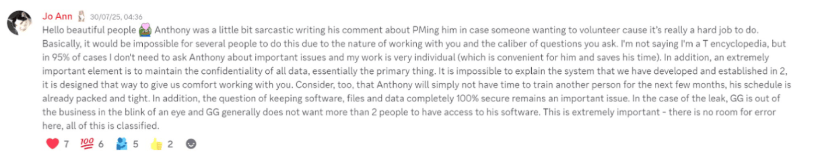
As the trial went on, Jo Ann added a separate $120 fee for participants who wanted to continue additional rounds of treatment beyond the initial six weeks. The fee covered rematching sounds, resetting the device, analyzing problems, and providing guidance for another six-week period. Because the device's configuration was password-protected, participants who didn't pay for continued rounds were left with what one member described as an "expensive brick." Each new charge was framed as compensation for the workload and technical demands of the role.
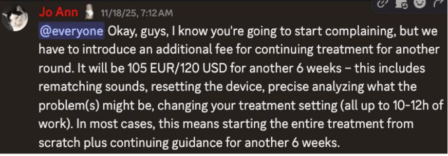
The contrast between Jo Ann's paid role and Luca's volunteer work became sharper when Jo Ann began making claims about Luca in a private server. She said that Luca had exaggerated his contributions, implying that he was motivated by personal financial gain. Luca disputed each of these points and provided screenshots showing that he had never asked to leave the role and had never received money for his work. In his messages with Anthony, he repeatedly declined offers of compensation, including Anthony's suggestion that he take a percentage of shipping payments. Luca described helping others as sufficient compensation and emphasized that he was contributing to the project for the community rather than for personal financial gain.
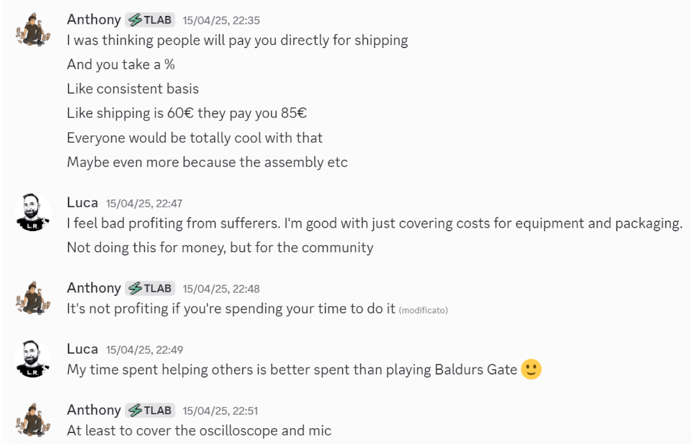
The contrast between Luca's selfless contribution and the financial exploitation that followed encapsulated the fundamental tension at the heart of the GGD trial. What had begun as a collaborative community effort, rooted in shared suffering and mutual support, had evolved into something far more troubling.
In January 2026, months after being removed from his assistant role, Luca was banned from Tinnitus Labs entirely. The ban came after he refused Anthony's immediate demand to turn over his private messages with both Kellz, a participant who had questioned the trial's legitimacy, and Daniel Iger, an external critic who had released videos challenging the project. Anthony contacted Luca one morning asking if he had been talking to either of them, then demanded Luca provide screenshots of his direct messages with both individuals. When Luca said he would provide the screenshots later—he was driving at the time—Anthony became insistent, stating that if Luca didn't provide evidence immediately, he would become "the #1 suspect." By the time Luca returned home to share the screenshots as promised, he found himself already banned from the server and blocked on all platforms without explanation. Luca had volunteered for months, made personal financial contributions of nearly €1,000, and tested and shipped devices without compensation.
Following the ban, Anthony posted a message to the server claiming that Luca had leaked his personal information to critics and accusing him of incompetent device testing and shipping. He blamed Luca for poorly packaged devices that resulted in failures requiring replacement, causing financial burdens to participants. These accusations stood in sharp contrast to the documented record. Anthony had traveled to Italy to work directly with Luca, and the two had tested the first units together before Luca began shipping them. The claims of incompetence emerged only after Luca refused to hand over private messages, suggesting they served to justify his removal rather than reflect his actual performance.
In January 2026, Dr. Susan Shore and Auricle released public statements explicitly distancing themselves from the project. Shore clarified that she had not given permission for her name to be used in connection with any device marketed by Tinnitus Labs or any privately manufactured tinnitus device. Auricle stated that neither the company nor Dr. Shore was affiliated with, had endorsed, or was involved in any device offered by Tinnitus Labs. The statements confirmed what participants had suspected: Anthony had built his entire operation on the unauthorized use of Shore's research and name.
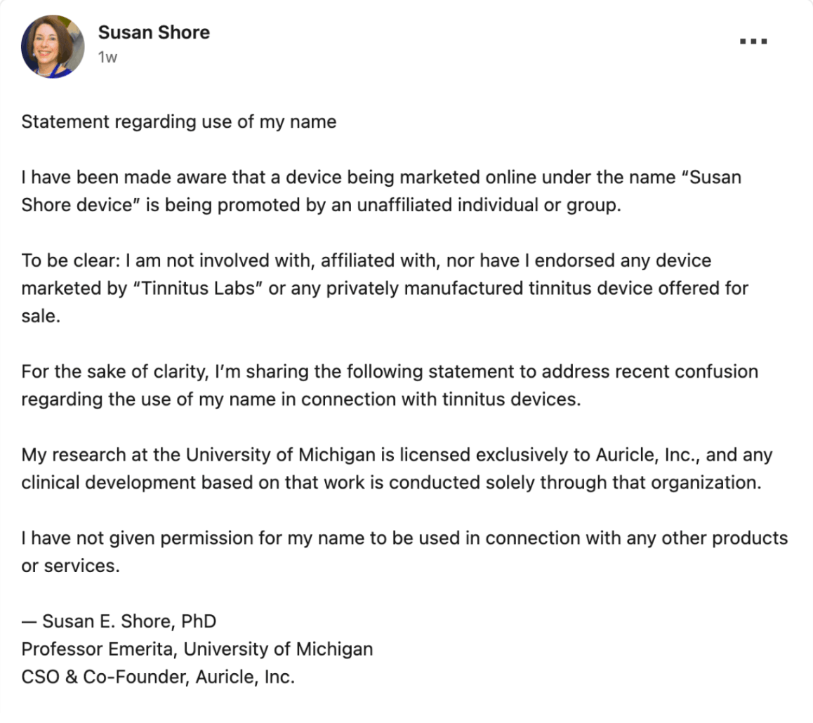
The people who joined the GGD trial live with severe, life-altering conditions for which there are no proven medical treatments. That desperation made them vulnerable to someone who positioned himself as offering a rare chance at relief. When Anthony presented the trial as scientific, participants trusted him. When he gave medical guidance, they followed it. When he raised prices, they paid. The involvement of volunteers like Luca reinforced the impression that the project was a collective, trustworthy effort. Participants defended Anthony against critics and pressured one another to follow the protocol strictly because they believed they were contributing to something that could help the community.
That trust became the mechanism through which Anthony fabricated data, provided dangerous medical guidance, silenced criticism, and extracted over $150,000 from participants. For some, the consequences extended beyond financial loss to permanent symptom worsening, months spent adhering to an ineffective protocol, and the erosion of time, hope, and stability they had spent years trying to preserve.
After Luca was banned from Tinnitus Labs, Anthony publicly announced that he was permanently stepping away from the GGD project project. In a message to the Tinnitus Labs server, he said the project was taking up too much of his time and energy, and that he was stepping away to reduce personal stress. He transferred control of the project to Jo Ann, who would continue it independently outside of the Tinnitus Labs server.
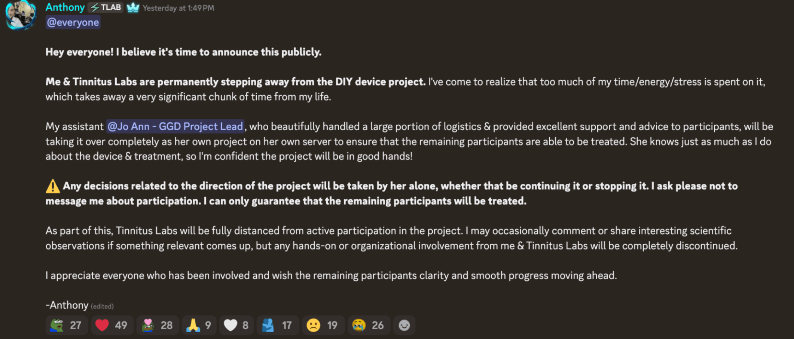
As this report was being finalized, Anthony's true identity was revealed. Anton Kenneth Whaley had worked as an English tutor for eight years and held a Master of Arts degree, advertising his services on a Russian marketplace. The PhD program in computational neuroscience, consulting career, olympiad achievements, and business ventures could not be verified. The person who had advised participants to taper off medications and interpreted neuroscience research to expand the device's applications had no medical training.
Jo Ann, who operated publicly under that name throughout the trial, is Joanna Zegarlicka, according to public profiles reviewed for this report. After Anthony stepped back from day-to-day involvement, she assumed primary responsibility for device configuration, treatment guidance, and participant communication, despite likewise having no verified medical or clinical qualifications.